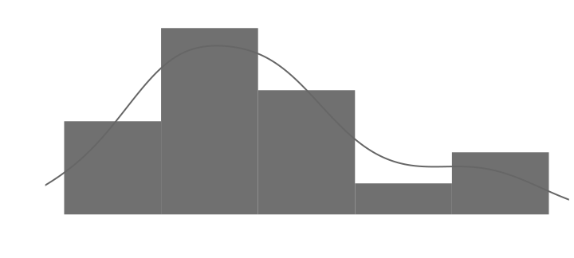
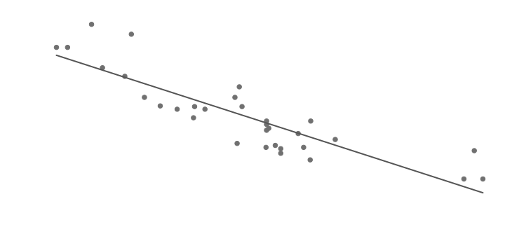
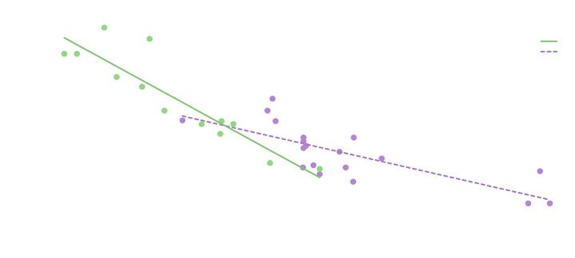
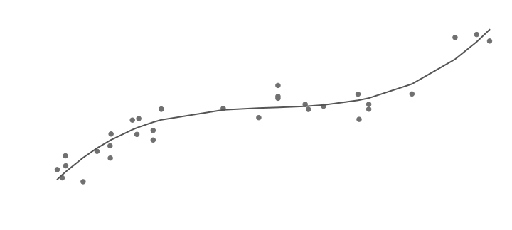
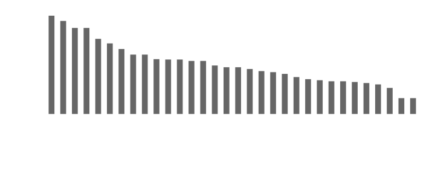
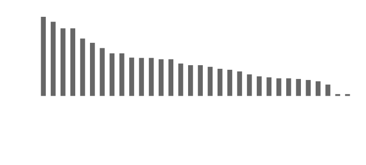

Built with R 4.3.1
R is a programming language and software environment
with a focus on statistics.
Splot is an R package for visualizing data.
This guide will introduce you to both.
Setting up
Downloading R
Follow the link matching your system to download R:
Windows | Mac | Linux
In Windows, you may see two versions, starting with R i386 and R x64. These correspond to the 32 and 64 bit versions of R. The 64 bit version should be fine on most modern systems, but if you run into issues, you might try the 32 bit version.
Installing packages
Packages offer additional functionality beyond base R, usually to make certain processes easier.
The initial download of R includes a few base packages, but there are many packages available through the Comprehensive R Archive Network (CRAN).
Packages can be downloaded and installed from within R using the
install.packages function. For example, this will install
splot:
install.packages("splot")The first time you install packages, you’ll need to select a mirror. These are CRAN hosts—they have the same files, but are in different physical locations. Choose a mirror that is geographically close to you for the best download speeds. If a package fails to download, try changing mirrors.
Understanding R
The underlying system
The interpreter. When you enter commands into the
console, the interpreter tries to understand it. You might think of this
understanding in terms of functions (operators) and data (operands). For
example, if you enter 1 + 1 into the console, R will
understand that each 1 is a number, and the +
is a function.
Functions. Almost everything in R is a function.
Most functions are called by the ( function; the name of
the function followed by parentheses (e.g., sum()). Many
functions accepts arguments—data entered inside the
parentheses, separated by commas. For example, sum(1, 2) is
a call to the sum function, with 1 as the
first argument, and 2 as the second argument. The
+ function works on its own, but it can also be called by
the ( function: 1 + 1 is the same as
'+'(1, 1).
Most functions will output some form of data (in +’s
case, the output is a single numeric value). This means that functions
can be entered as arguments to other function. For example,
sum(sum(1, 1), 2) is another call to the sum
function, with the output of sum(1, 1) as the first
argument, and 2 as the second argument.
Data representations
In what follows, the outlined code boxes contain syntax highlighted
code which you can run in an R console, followed by its expected output
(preceded by #>).
Matrices
Matrices store sets of data. For example, take a look at the Motor Trend dataset, which is include in base R:
mtcars
#> mpg cyl disp hp drat wt qsec vs am gear carb
#> Mazda RX4 21.0 6 160.0 110 3.90 2.620 16.46 0 1 4 4
#> Mazda RX4 Wag 21.0 6 160.0 110 3.90 2.875 17.02 0 1 4 4
#> Datsun 710 22.8 4 108.0 93 3.85 2.320 18.61 1 1 4 1
#> Hornet 4 Drive 21.4 6 258.0 110 3.08 3.215 19.44 1 0 3 1
#> Hornet Sportabout 18.7 8 360.0 175 3.15 3.440 17.02 0 0 3 2
#> Valiant 18.1 6 225.0 105 2.76 3.460 20.22 1 0 3 1
#> Duster 360 14.3 8 360.0 245 3.21 3.570 15.84 0 0 3 4
#> Merc 240D 24.4 4 146.7 62 3.69 3.190 20.00 1 0 4 2
#> Merc 230 22.8 4 140.8 95 3.92 3.150 22.90 1 0 4 2
#> Merc 280 19.2 6 167.6 123 3.92 3.440 18.30 1 0 4 4
#> Merc 280C 17.8 6 167.6 123 3.92 3.440 18.90 1 0 4 4
#> Merc 450SE 16.4 8 275.8 180 3.07 4.070 17.40 0 0 3 3
#> Merc 450SL 17.3 8 275.8 180 3.07 3.730 17.60 0 0 3 3
#> Merc 450SLC 15.2 8 275.8 180 3.07 3.780 18.00 0 0 3 3
#> Cadillac Fleetwood 10.4 8 472.0 205 2.93 5.250 17.98 0 0 3 4
#> Lincoln Continental 10.4 8 460.0 215 3.00 5.424 17.82 0 0 3 4
#> Chrysler Imperial 14.7 8 440.0 230 3.23 5.345 17.42 0 0 3 4
#> Fiat 128 32.4 4 78.7 66 4.08 2.200 19.47 1 1 4 1
#> Honda Civic 30.4 4 75.7 52 4.93 1.615 18.52 1 1 4 2
#> Toyota Corolla 33.9 4 71.1 65 4.22 1.835 19.90 1 1 4 1
#> Toyota Corona 21.5 4 120.1 97 3.70 2.465 20.01 1 0 3 1
#> Dodge Challenger 15.5 8 318.0 150 2.76 3.520 16.87 0 0 3 2
#> AMC Javelin 15.2 8 304.0 150 3.15 3.435 17.30 0 0 3 2
#> Camaro Z28 13.3 8 350.0 245 3.73 3.840 15.41 0 0 3 4
#> Pontiac Firebird 19.2 8 400.0 175 3.08 3.845 17.05 0 0 3 2
#> Fiat X1-9 27.3 4 79.0 66 4.08 1.935 18.90 1 1 4 1
#> Porsche 914-2 26.0 4 120.3 91 4.43 2.140 16.70 0 1 5 2
#> Lotus Europa 30.4 4 95.1 113 3.77 1.513 16.90 1 1 5 2
#> Ford Pantera L 15.8 8 351.0 264 4.22 3.170 14.50 0 1 5 4
#> Ferrari Dino 19.7 6 145.0 175 3.62 2.770 15.50 0 1 5 6
#> Maserati Bora 15.0 8 301.0 335 3.54 3.570 14.60 0 1 5 8
#> Volvo 142E 21.4 4 121.0 109 4.11 2.780 18.60 1 1 4 2In the mtcars matrix, each row represents a particular
car, and each column represents a feature of that car (a variable). You
can use the ? function (?mtcars) to access
documentation.
Note: In base R, there are purely numerical matrices (as made with
the matrix function) and matrices with mixed data types
(such as numerical and character or factor columns; as made by the
data.frame function). These are both matrix
representations, but they have some different methods (functions that
interact with them). mtcars is a data.frame
object (which you can see with the class function;
class(mtcars)), but the methods used in these examples
(such as the [ function) will also work with standard
matrix objects.
Matrices as arguments
Some functions accept entire matrices as arguments. For example, the
colnames function will output a matrix’s column names:
colnames(mtcars)
#> [1] "mpg" "cyl" "disp" "hp" "drat" "wt" "qsec" "vs" "am" "gear"
#> [11] "carb"Vectors as arguments
Other functions only accept values or vectors (single columns or
rows, or created independently with the c function) as
arguments. You can use the [ function to select single
columns or rows by name or index. [’s first argument
selects rows, and its second argument selects columns. For example, you
can select the mpg variable like this (note that variable
names are case sensitive):
mtcars[, "mpg"]
#> [1] 21.0 21.0 22.8 21.4 18.7 18.1 14.3 24.4 22.8 19.2 17.8 16.4 17.3 15.2 10.4
#> [16] 10.4 14.7 32.4 30.4 33.9 21.5 15.5 15.2 13.3 19.2 27.3 26.0 30.4 15.8 19.7
#> [31] 15.0 21.4Fun note: The [ function can also be called by the
( function: '['(mtcars,, 'mpg').
Since the [ function outputs a vector, you can enter it
as an argument to another function, such as the sum
function:
sum(mtcars[, "mpg"])
#> [1] 642.9The sum function will handle multiple vectors or single
values entered as individual arguments (sum(c(1, 2, 3)) is
the same as sum(1, 2, 3)), but other functions expect a
vector as the first argument. For instance mean(c(1, 2, 3))
gives the average of 1, 2, and 3, whereas mean(1, 2, 3)
would be the same as mean(1), giving the average of 1.
Check a function’s documentation to see what it
expects—sum’s first argument is ... meaning it
will collapse additional arguments (those without names matching other
arguments) into the first argument, whereas mean’s first
argument is x.
Visualizing data with splot
The splot function generates all sorts of plots. Its
first argument is for variable names, and its second argument is for the
dataset containing those variables. See the documentation for more
information about the splot function (enter
?splot in an R console, or
view
online).
Distribution of a single variable
For example, we can look at the density distribution (and histogram)
of the mpg variable in mtcars like this:
splot(mpg, mtcars) Here, the bars depict the frequency of the value-range they cover (which is the histogram part), and the line is the estimated theoretical distribution of the variable (if more cars were sampled from the same source, they would theoretically resemble this distribution; e.g., most cars would go between 15 and 20 miles per gallon).
Relationship between two variables
The first argument in the splot function can be entered
as a formula, which is a way to specify relationships between variables.
The first part of a formula is the tilde (~), which
separates a y variable (before the tilde; on the vertical
axis of a plot) from an x variable (after the tilde; on the
horizontal axis of a plot).
For example, we can look at the relationship between the
mpg and wt variables like this:
splot(mpg ~ wt, mtcars) Each dot represents a car, and its position is a combination of its miles per gallon (MPG) and weight; the higher it is vertically, the more miles it can go per gallon of gas, and the farther it is horizontally, the more it weighs (in tons).
The line is from a linear regression, which is attempting to predict y given x. For example, from this data, if the regression were to see a car that weighed about 3 tons, it would predict its MPG to be around 22.
Something we might do to improve this prediction (model fit) is to
consider other variables. Weight seems to be closely related to MPG
(going by the last plot), but maybe MPG depends on something else as
well, such as the car’s style of transmission (automatic versus manual).
To look at this, we can add a splitting variable to the formula with an
asterisk (*).
Splitting variables break the data up into groups based on their value. For example, this will separate cars that have an automatic transmission (0) from those that have a manual transmission (1), and estimate a line for each group.
splot(mpg ~ wt * am, mtcars) From this, it seems (in this sample of cars at least) that the negative relationship between weight and MPG is stronger among cars with a manual transmission; transmission appears to moderate the relationship between weight and MPG. That is, the line for cars with manual transmissions has a steeper slope than the line for cars with automatic transmissions.
Another way we can improve model fit is by allowing our prediction lines to bend. A particularly clear case where this seems to help is in modeling the relationship between weight and displacement:
splot(wt ~ disp + disp^2 + disp^3, mtcars)
The ^ function raises the preceding vector by the following
value, so disp ^ 2 is the squared disp
variable, and disp ^ 3 is the cubed disp
variable. Each of these transformations of x increases the
prediction line’s ability to bend.
Maybe the relationship between displacement and weight is actually curvy like this, but we might suspect there are just different types of cars represented here. For example, it kind of looks like there are clusters in the data, one under 200, and one between 200 and 400. We can visualize this by splitting displacement by itself at those points:
 This cleans up the data nicely, but if we wanted to say these clusters actually represent different types of cars, it would be more convincing if we could find another variable that defines groups like these.
Categorical variables
We started by looking at the mpg variable by itself, but
since this dataset has named entries (unlike sets with less meaningful
rows like participant IDs), it might be informative to visualize the MPG
of each entry:

Here, the additional arguments are changing aspects of the display from
the way they would show up by default: The type argument
sets the look of the data (bars rather than lines or points), and the
sort argument changes the way the x variable
is ordered (by y’s value rather than alphabetically).
The splot function has many more arguments which mostly
affect the way each element of the figure is displayed. For example, in
this figure, you might want to adjust the range of the y axis (with the
myl argument), and maybe make the labels more informative
(with the laby and labx arguments):
splot(
mpg ~ rownames(mtcars), mtcars,
type = "bar", sort = TRUE,
myl = c(10, 35), laby = "Miles Per Gallon", labx = "Car"
)
To explore the data more broadly we might look at a few variables as once. These can be entered as a matrix in the y position:

The mv.as.x argument is saying the columns of
y should be displayed as levels on the x axis (“mv” stands
for “multiple variables”). Otherwise, they would be displayed as levels
of a by variable, with MPG on the x axis.
This type of plot is more commonly displayed as a bar plot, because lines are sometimes taken to imply that there’s some movement between levels (as in the same participants experiencing different conditions; within-person experimental designs).
Another way to interpret lines, however, is as regression lines. This is particularly clear if we look at the raw data by representing this line plot as a scatter plot:
splot(
mtcars[, c("cyl", "carb", "gear")] ~ mpg, mtcars,
mv.as.x = TRUE, type = "scatter", xlas = 1, lpos = "topright"
)
The xlas argument sets the orientation of the x axis labels
(since they default to vertical for scatter plots), and the
lpos argument sets the position of the legend.
This representation isn’t very informative in terms of the data (as there is a lot of overlap at each level of each variable), but these lines are actually prediction lines from regressions. The line plot depicts each part of the regression: Where each line crosses an x axis label is the mean of the data represented by the line within that level; the error bars show the standard errors around those means (which correspond to the p-value of the associated t test; if they cross, the difference is non-significant); and the slope of the line between levels corresponds to the associated beta weight. In this sense, a line plot can be somewhat more informative than a bar plot.
For more applied examples, see the
explore
and
refine
vignettes.
For more splot specific information, see the
style
guide and
full
documentation.